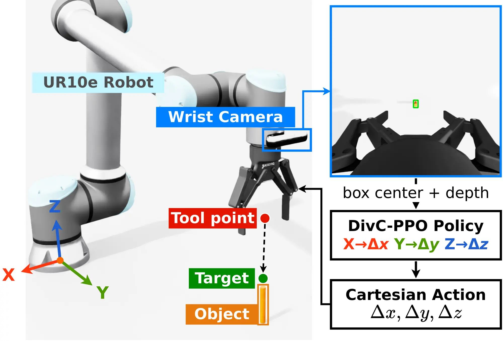
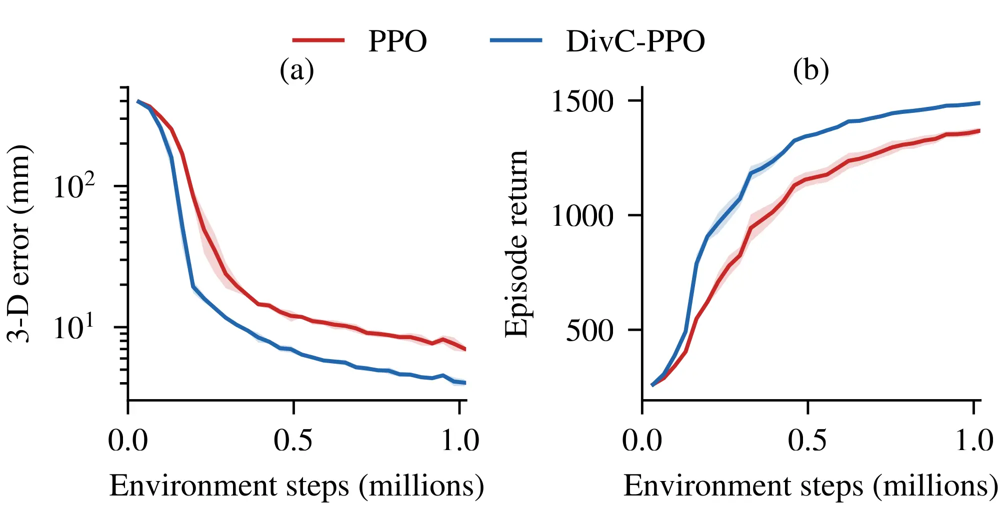
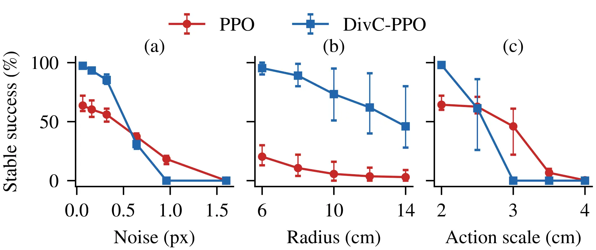

DivC-PPO: Cartesian-Aligned Credit Assignment for Precision Vision‑Guided End‑Effector Positioning
Aditya Nugraha Putra1 and Van-Linh Nguyen2
1AIMHI, National Chung Cheng University, Taiwan 2Department of Computer Science and Information Engineering, National Chung Cheng University, Taiwan
DivC-PPO
X –Y –Z –
PPO
X –Y –Z –
DivC-PPO brings X, Y, and Z into the 1 mm box by 1.0 s and stays there. PPO overshoots in Y and Z near the target and becomes stable at 2.17 s instead of 1.57 s.
Same object placement, seed 42, in Isaac Sim. Traces show the absolute error of each axis in millimeters on a log scale, and the shaded band is the 1 mm target box. One episode, not a statistic.
Abstract
Vision-guided positioning requires converting visual errors into precise Cartesian corrections. Standard PPO assigns one advantage and one probability ratio to the whole action, so the contributions of the X, Y, and Z axes can be mixed during policy optimization. This study presents DivC-PPO, a Cartesian-aligned credit assignment method for PPO that gives each axis its own reward stream, advantage, and clipped probability ratio. The actor and critic use only wrist-camera detection features and proprioception, while training rewards are computed from the simulator state. On a simulated UR10e positioning task with objects placed within ±4 cm along X and Y, DivC-PPO reaches a 3-D error of 0.337 mm and 100% stable success over three seeds. PPO with the same critic, reward terms, and training budget achieves 1.167 mm and 56.64%. Scrambling the axis mapping prevents learning, showing that the gain depends on the correct correspondence. Replacing the per-axis ratios with a shared ratio raises the error to 0.647 mm. The advantage holds under small detection noise and wider target placement but disappears under larger noise and action-scale mismatch.
Method
Standard PPO multiplies the per-axis probability ratios into one joint ratio and pairs it with a single advantage for the whole action. DivC-PPO instead keeps the reward–action correspondence of each axis through the reward, advantage estimation, probability ratio, and clipping.
Each axis stream receives the reward terms of its own axis, and the task-wide terms are copied in full to all three streams. The critic outputs a single scalar value, which serves as the shared baseline for all three credit streams. The per-axis clipped surrogates are summed into the policy loss.
Overview of DivC-PPO. Rewards from the simulator state form one stream per Cartesian axis, with task-wide terms copied to all three. One critic value is the baseline for every stream, and the per-axis clipped surrogates are summed into the policy loss. The actor and critic share the 12-D observation. The actor output is clipped to [−1, 1], scaled by 1.5 cm, and converted to joint targets by damped-least-squares inverse kinematics (DLS IK).
Task
The policy receives the YOLO11n bounding-box center and depth from the wrist camera, together with proprioception. It moves the tool point near the fingertips to the target on top of the object. Training rewards are computed from the simulator state.

Vision-guided positioning task in Isaac Sim. DivC-PPO keeps each Cartesian axis responsible for its own action.
DivC-PPO, wrist camera
PPO, wrist camera
The wrist camera records at 640×640. The overlay shows the YOLO detection used as the observation and the region masked out for the gripper. One evaluation episode per method, seed 42.
Results
Both methods use the same critic, reward terms, and training budget. Results are averaged over three seeds with 1,024 evaluation episodes each.
Nominal positioning performance
Metric
PPO
DivC-PPO
3-D error (mm)
1.167 ± 0.103
0.337 ± 0.059
Stable success (%)
56.64 ± 5.53
100.00 ± 0.00
Near-target failure (%)
41.15 ± 5.22
0.00 ± 0.00
Time to stable success (s)
2.14 ± 0.06
1.55 ± 0.03
Every DivC-PPO episode ends with an error below 1 mm. Most PPO failures occur close to the target: 97.8% of PPO episodes come within 2 mm, so PPO fails in the last few millimeters rather than on the approach.
Nominal evaluation over three seeds. (a) Cumulative distribution of the 3-D error. Thick lines pool the seeds, thin lines show each seed, and the dashed line marks 1 mm. (b) Final X–Y error of each episode. The dashed square is the 1 mm target box and crosses mark the means.

Training curves averaged over three seeds. (a) Final 3-D error of each training episode, on a log scale. (b) Episode return of the environment reward. DivC-PPO falls under 10 mm after 0.36 million environment steps, about half of the 0.69 million that PPO needs.
Mechanism controls
Variant
3-D error (mm)
Stable success (%)
PPO
1.167 ± 0.103
56.64 ± 5.53
DivC-PPO
0.337 ± 0.059
100.00 ± 0.00
Shared-ratio control
0.647 ± 0.122
93.55 ± 5.75
Scrambled mapping
202.7 ± 184.3
0.00 ± 0.00
Scrambling the axis mapping fails completely, so splitting credit into three streams does not help when each stream is optimized with the reward of another axis. The shared-ratio control is better than PPO, but its error is almost twice as large as with DivC-PPO. Per-axis rewards and advantages provide most of the gain over PPO, and per-axis probability ratios further reduce the error in this setting.
Robustness
The advantage holds under small bounding-box noise and when the object is placed outside the training range. It disappears from 0.64 px of detection noise and from an action scale of 2.5 cm.

Stable success under deployment perturbations. (a) Bounding-box noise, (b) placement radius, and (c) action scale. Markers show the mean over three seeds and bars the range over seeds.Full robustness table
Robustness to deployment perturbations, mean over three seeds
PPO
DivC-PPO
Condition
3-D error (mm)
Success (%)
3-D error (mm)
Success (%)
Bounding-box noise (px)
0.064
1.021
63.7
0.529
97.3
0.16
1.018
60.3
0.552
93.3
0.32
1.034
56.0
0.622
85.3
0.64
1.094
37.3
0.840
31.0
0.96
1.181
18.3
1.114
0.0
1.6
1.410
0.0
1.656
0.0
Placement radius (cm)
6
1.866
20.3
0.596
95.3
8
2.510
10.7
0.682
89.0
10
3.396
5.7
0.825
73.3
12
7.075
3.7
0.992
62.0
14
12.717
3.0
1.195
46.0
Action scale (cm)
2.0
1.021
64.3
0.517
98.0
2.5
1.040
62.7
1.528
61.3
3.0
2.248
46.0
9.521
0.0
3.5
6.432
6.7
15.121
0.0
4.0
11.973
0.3
18.419
0.0
Limitations
All results come from one positioning task with one robot in simulation, and PPO is the only baseline. Because the training reward is computed from the simulator state, transfer to a physical robot still has to be shown. DivC-PPO relies on reward terms that can be assigned to Cartesian axes through the task frame. Its main failures appear with detection noise from 0.64 px and action scales from 2.5 cm. Randomizing the detection noise and the action scale during training is a next step toward removing these failures.
BibTeX
@inproceedings{putra2026divcppo,
title = {DivC-PPO: Cartesian-Aligned Credit Assignment for
Precision Vision-Guided End-Effector Positioning},
author = {Putra, Aditya Nugraha and Nguyen, Van-Linh},
year = {2026},
note = {To appear}
}